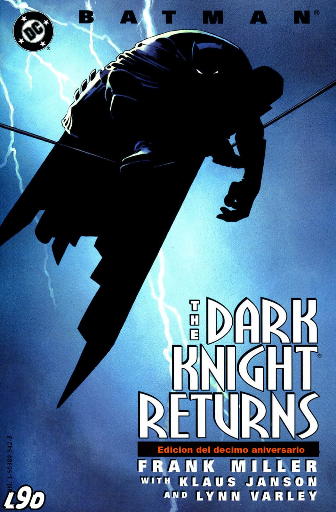
Batman: *The Dark Knight Returns* (El regreso del Caballero Oscuro) es una historia donde Bruce Wayne ya está viejo y retirado. Gotham está mucho más violenta y fuera de control, con criminales que dominan las calles. Bruce lleva años sin ser Batman, pero la situación de la ciudad lo obliga a volver a ponerse el traje. Cuando regresa, no es el mismo Batman de antes: es más brutal, más violento y más desesperado por limpiar Gotham. En el camino enfrenta a varios enemigos clásicos como Dos Caras y el Joker, que también reaparece después de mucho tiempo. Uno de los momentos más importantes es su enfrentamiento con el Joker, que termina de forma muy extrema, mostrando hasta dónde ha cambiado Batman. También aparece el gobierno de Estados Unidos, que no quiere que Batman siga actuando, y eso lleva a un enfrentamiento final con Superman, que ahora trabaja para el gobierno. La historia trata temas como el envejecimiento, la justicia, el orden vs la libertad y hasta dónde puede llegar un héroe cuando el mundo se vuelve demasiado caótico. Es una de las historias más importantes de Batman porque lo muestra como una versión más oscura, madura y extrema del personaje.
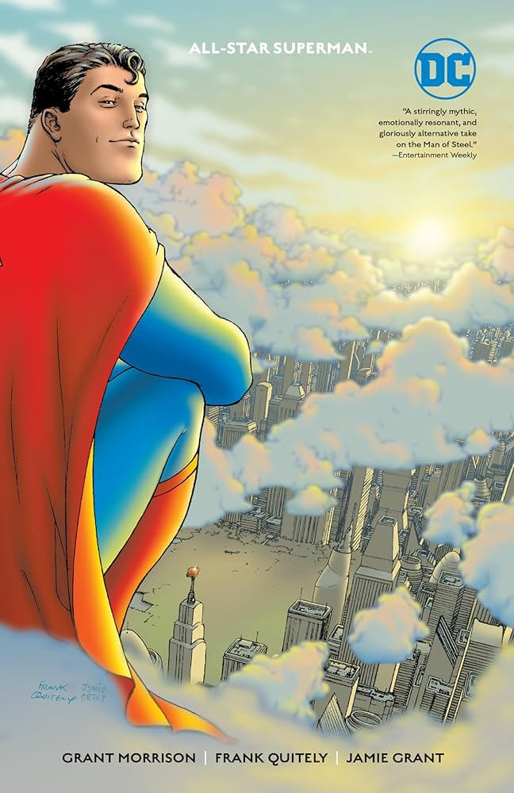
All-Star Superman es una de las historias más famosas de Superman. Presenta una versión del personaje al final de su vida, después de haber sido sobrecargado de energía solar al rescatar una misión cerca del Sol. Al descubrir que le queda poco tiempo de vida, Superman decide aprovechar el tiempo que le queda para completar una serie de tareas que considera importantes. Entre ellas están salvar a la humanidad una vez más, revelar su identidad a Lois Lane, ayudar a sus amigos, inspirar a las personas y enfrentar por última vez a su mayor enemigo, Lex Luthor. A lo largo de la historia, Superman demuestra por qué es considerado el héroe más grande de DC. En lugar de dejarse vencer por el miedo a la muerte, elige seguir ayudando a los demás con esperanza, compasión y optimismo hasta el final. La historia trata temas como el legado, el sacrificio, la esperanza, la bondad y el significado de ser un héroe. Es considerada una de las mejores historias de Superman porque resume todo lo que representa el personaje y no requiere haber leído muchos cómics anteriores para disfrutarla.
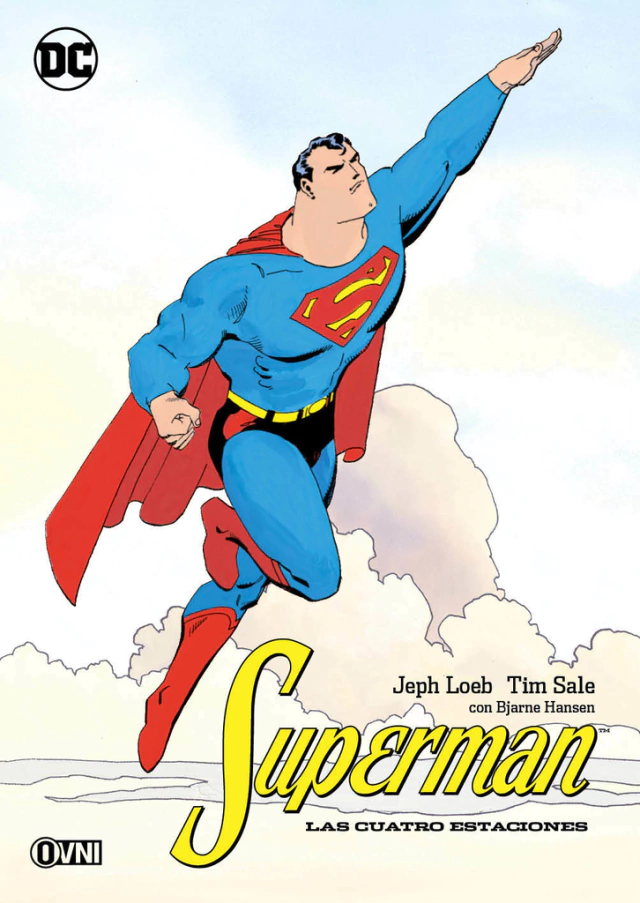
Superman for All Seasons cuenta la historia de los primeros años de Superman y su transición de un joven de un pequeño pueblo a convertirse en el héroe más grande del mundo. La historia sigue a Clark Kent mientras deja su hogar en Smallville para comenzar una nueva vida en Metrópolis. A lo largo del camino aprende a equilibrar su vida como periodista y como Superman, mientras intenta encontrar su lugar en el mundo sin perder los valores que le enseñaron sus padres adoptivos, Jonathan y Martha Kent. Cada capítulo está narrado desde el punto de vista de un personaje diferente, como Jonathan Kent, Lois Lane, Lex Luthor y Lana Lang. Esto permite ver cómo cada uno percibe a Clark y cómo influye en sus vidas. El cómic trata temas como el crecimiento personal, la identidad, la esperanza y la importancia de mantener la humildad. Más que centrarse en grandes batallas, muestra el lado humano de Superman y cómo sus valores lo convierten en un verdadero héroe. Es una de las mejores historias para conocer al personaje, ya que no requiere haber leído otros cómics y presenta una versión clásica y muy emotiva de Superman.
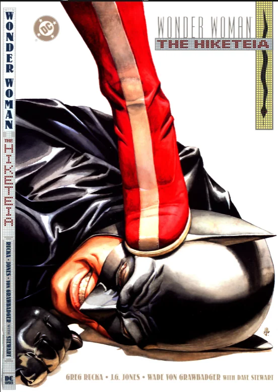
Este cómic cuenta la historia de una joven llamada Danielle Wellys, quien huye de un grupo de personas que quiere matarla. Desesperada, realiza la Hiketeia, un antiguo ritual sagrado de las amazonas mediante el cual le pide protección a Wonder Woman. Diana acepta el juramento y queda obligada por su honor a protegerla, sin importar las consecuencias. Sin embargo, Batman descubre que Danielle ha cometido un crimen muy grave y debe responder ante la justicia. Como resultado, Batman intenta capturarla mientras Wonder Woman se niega a romper su promesa. A partir de ese momento, ambos héroes entran en conflicto. Batman defiende que nadie está por encima de la ley, mientras que Wonder Woman cree que su palabra y las antiguas tradiciones amazónicas deben cumplirse hasta el final. El cómic explora temas como el honor, la justicia, el deber, el perdón y el choque entre dos formas distintas de entender lo que significa hacer lo correcto. Más que una historia de acción, es un enfrentamiento moral entre dos de los héroes más importantes de DC. Es considerada una de las mejores historias de Wonder Woman porque refleja perfectamente quién es Diana: una guerrera poderosa, pero también una persona guiada por la compasión, el honor y la verdad.
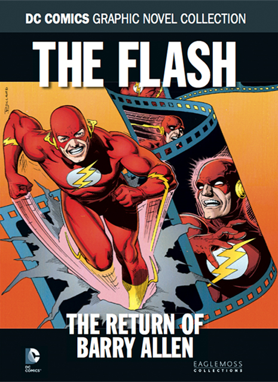
Esta historia sigue a Wally West, quien se había convertido en Flash después de la aparente muerte de Barry Allen. Todo cambia cuando Barry regresa inesperadamente, y tanto Wally como los demás héroes creen que el Flash original ha vuelto. Sin embargo, a medida que avanza la historia, comienzan a aparecer comportamientos extraños que hacen dudar de que realmente sea Barry Allen. Wally deberá descubrir la verdad y demostrar que él también es digno de llevar el legado de Flash. El cómic trata temas como la identidad, el legado, la superación personal y el significado de ser un héroe. Es considerado una de las mejores historias de Flash porque desarrolla de forma excelente al personaje de Wally West y tiene uno de los giros más recordados de DC.
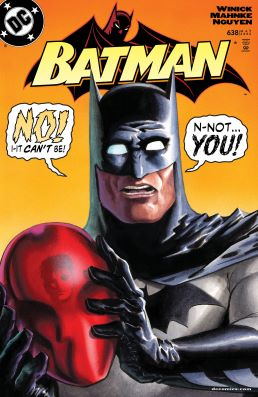
La historia comienza cuando un nuevo vigilante llamado Red Hood aparece en Gotham. A diferencia de Batman, combate el crimen utilizando métodos mucho más violentos y no duda en matar a los criminales si lo considera necesario. Batman comienza a investigarlo y descubre que Red Hood conoce demasiados secretos sobre él y la Bat-Familia. Poco a poco se revela que, en realidad, es Jason Todd, el segundo Robin, quien había muerto años atrás después de ser capturado y asesinado por el Joker. Jason regresó a la vida y, al descubrir que Batman nunca mató al Joker para vengarlo, siente que Bruce lo traicionó. Esto provoca un fuerte enfrentamiento entre ambos, ya que Jason cree que algunos criminales, como el Joker, deben morir para evitar que sigan causando sufrimiento, mientras que Batman se mantiene fiel a su regla de no matar. La historia trata temas como el dolor, la pérdida, la venganza y el conflicto entre la justicia y la violencia. También explora la culpa de Batman por la muerte de Jason y las consecuencias de sus decisiones como mentor. Es una de las historias más importantes de Batman porque marcó el regreso de Jason Todd y dio origen al personaje de Red Hood, quien desde entonces se convirtió en uno de los miembros más populares de la Bat-Familia.
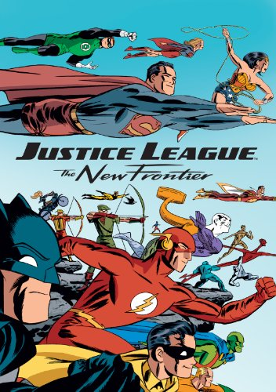
Esta historia se desarrolla en la década de 1950, cuando el mundo deja atrás la Segunda Guerra Mundial y entra en la Guerra Fría. En este contexto, los héroes deben adaptarse a una nueva época marcada por el miedo, la política y la exploración espacial. El cómic sigue a varios personajes como Superman, Batman, Wonder Woman, Flash (Barry Allen), Green Lantern (Hal Jordan) y Martian Manhunter, mostrando cómo cada uno encuentra su lugar en este nuevo mundo. También presenta el nacimiento de una nueva generación de héroes y la formación de la Justice League. Mientras los héroes enfrentan sus propios desafíos, una antigua y poderosa amenaza conocida como "The Centre" despierta y pone en peligro a toda la humanidad. Para detenerla, los héroes deben dejar de lado sus diferencias y trabajar juntos por primera vez. La historia trata temas como la esperanza, el heroísmo, la unión y el cambio. Más que centrarse en un solo personaje, muestra cómo nace el Universo DC moderno y cómo los héroes inspiran a la humanidad en tiempos de incertidumbre. Es considerada una de las mejores historias de DC porque reúne a sus personajes más importantes en un relato épico que combina acción, historia y el espíritu clásico de los superhéroes.
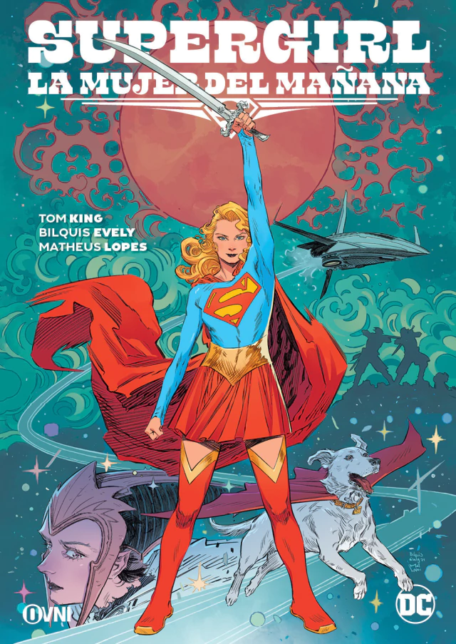
La historia sigue a Supergirl, quien decide pasar su cumpleaños sola en un planeta con un sol rojo, donde no tiene poderes y puede disfrutar un momento de tranquilidad. Allí conoce a Ruthye Marye Knoll, una joven cuya familia fue asesinada por el criminal Krem de las Colinas Amarillas. Ruthye le pide ayuda para encontrar al asesino y vengar la muerte de su padre. Aunque al principio duda, Supergirl acepta acompañarla. Juntas emprenden un viaje por diferentes planetas del universo, enfrentando peligros, cazadores de recompensas y al propio Krem. A lo largo del viaje, Supergirl demuestra que ser un héroe no consiste solo en tener grandes poderes, sino en tomar decisiones difíciles y actuar con compasión incluso cuando sería más fácil recurrir a la venganza. Ruthye también aprende que la justicia y la venganza no son lo mismo. El cómic trata temas como la pérdida, el duelo, la justicia, el crecimiento personal y la esperanza. Además, explora el lado más humano de Supergirl y muestra cómo su experiencia al haber perdido Krypton la convierte en una heroína diferente a Superman. Es considerada una de las mejores historias de Supergirl y una de las obras más destacadas de DC en los últimos años, por su desarrollo de personajes, su narrativa y su enfoque emocional.
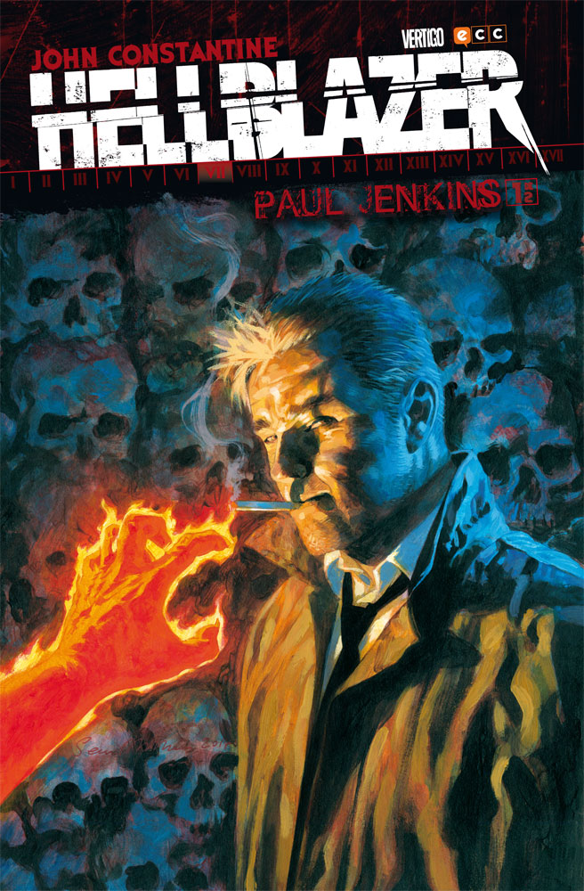
Hellblazer sigue la vida de John Constantine, un detective ocultista, exorcista y estafador que se enfrenta a demonios, ángeles, espíritus y amenazas sobrenaturales. Constantine no es el típico héroe. Es inteligente, manipulador y suele resolver los problemas más con su ingenio que con la fuerza. A menudo engaña tanto a humanos como a seres sobrenaturales para salir con vida, aunque casi siempre sus victorias tienen un alto costo y las personas cercanas a él terminan pagando las consecuencias. La serie muestra a Constantine viajando por distintos lugares mientras investiga casos paranormales, realiza rituales y lucha contra fuerzas oscuras. A diferencia de muchos héroes de DC, sus historias tienen un tono más adulto, con elementos de terror, misterio y magia. Los temas principales de Hellblazer son la culpa, el sacrificio, la corrupción, la redención y el precio de las decisiones. Constantine vive con el peso de sus errores, pero nunca deja de enfrentarse al mal, incluso cuando sabe que probablemente perderá algo en el proceso. Es una de las series más influyentes de DC y convirtió a John Constantine en uno de los personajes más populares del género de terror y fantasía. Si quieres empezar a leer al personaje, una de las historias más recomendadas es Dangerous Habits, considerada por muchos la mejor etapa de la serie.
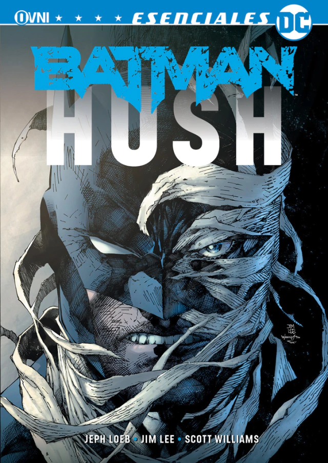
La historia comienza cuando Batman investiga una serie de extraños ataques en Gotham. Poco a poco descubre que muchos de sus enemigos, como el Joker, Dos Caras, Poison Ivy, Killer Croc, Harley Quinn, el Acertijo y otros villanos, parecen estar trabajando siguiendo el plan de una persona desconocida. Mientras intenta descubrir quién está detrás de todo, Batman recibe la ayuda de varios aliados, como Catwoman, Nightwing, Robin, Superman y Huntress. Al mismo tiempo, su relación con Catwoman se vuelve más cercana y Bruce comienza a confiar en ella como nunca antes. Finalmente se revela que el responsable de manipular los acontecimientos es un misterioso villano conocido como Hush, cuyo objetivo es destruir la vida de Bruce Wayne y Batman desde las sombras. La historia trata temas como la confianza, la identidad, el pasado y las consecuencias de las decisiones de Bruce. Además, reúne a muchos de los personajes más importantes del universo de Batman y presenta uno de los misterios más famosos del personaje. Batman: Hush es considerado uno de los mejores cómics para empezar a leer Batman, ya que combina acción, investigación y una gran cantidad de personajes clásicos en una sola historia.
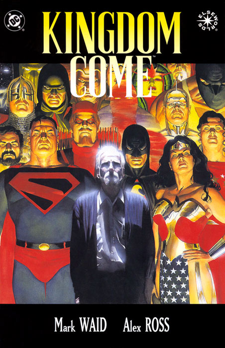
Kingdom Come se desarrolla en un posible futuro del Universo DC. Superman se ha retirado después de perder la fe en la humanidad y en los nuevos héroes, quienes son mucho más violentos e irresponsables que la generación clásica. Sin su liderazgo, el mundo cae en el caos y los superhumanos comienzan a causar enormes daños. Tras una tragedia de escala mundial, Superman decide volver a la acción y reúne nuevamente a la Justice League para restaurar el orden. Sin embargo, sus métodos generan conflictos con Batman, quien cree que la libertad es más importante que el control absoluto. Mientras tanto, Lex Luthor forma una alianza con varios villanos para manipular la situación y enfrentar a los héroes entre sí, llevando al mundo al borde de una guerra. La historia explora temas como el legado, la responsabilidad, la esperanza, la justicia y el verdadero significado de ser un héroe. También plantea el conflicto entre los ideales clásicos de Superman y la visión más dura y pragmática de Batman. Kingdom Come es considerada una de las mejores historias de DC Comics porque reúne a la mayoría de sus héroes y villanos en una obra épica que reflexiona sobre el futuro del universo DC y sobre el papel de los superhéroes en la sociedad.
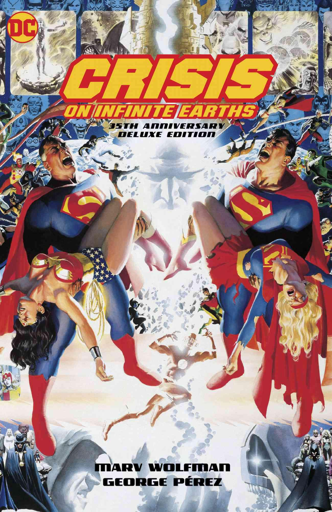
La historia comienza cuando una gigantesca ola de antimateria empieza a destruir los distintos universos del Multiverso de DC. Detrás de esta amenaza se encuentra el Anti-Monitor, un ser con un poder casi ilimitado que busca eliminar toda la realidad y convertirse en el único ser existente. Para detenerlo, el Monitor reúne a héroes y villanos de diferentes Tierras y épocas, incluyendo a Superman, Batman, Wonder Woman, Flash, Green Lantern y muchos otros. A medida que la batalla avanza, mundos enteros desaparecen y varios héroes hacen grandes sacrificios para salvar la existencia. Entre los momentos más importantes de la historia destacan las muertes de Supergirl y Barry Allen (Flash), quienes sacrifican sus vidas para detener al Anti-Monitor y dar una oportunidad al resto de los héroes. Finalmente, los héroes logran derrotar al Anti-Monitor, pero el Multiverso deja de existir. Las múltiples Tierras se fusionan en una sola, creando un nuevo Universo DC con una historia unificada. A partir de ese momento, muchos personajes tienen nuevos orígenes y gran parte de la continuidad cambia. La historia trata temas como el sacrificio, la esperanza, el heroísmo y la unión frente a una amenaza imposible. Es considerada el evento más importante de la historia de DC Comics porque cambió para siempre su universo y dio origen a una nueva continuidad.
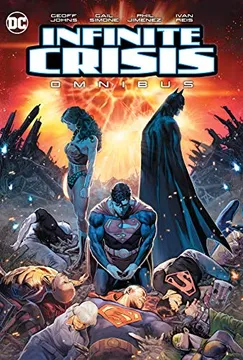
Infinite Crisis ocurre años después de Crisis on Infinite Earths. Aunque el universo fue unificado, algunos héroes creen que el nuevo mundo se ha vuelto más oscuro, violento y ha perdido los ideales que alguna vez representó. Desde una dimensión paralela regresan Superman de Tierra-2, Lois Lane de Tierra-2, Superboy-Prime y Alexander Luthor Jr.. Ellos consideran que el Universo DC actual está corrompido y deciden crear un mundo "perfecto", aunque para lograrlo deben destruir la realidad existente. Mientras tanto, Batman, Superman y Wonder Woman atraviesan una crisis personal. La confianza entre ellos se rompe y la Justice League se encuentra dividida cuando más necesita permanecer unida. El conflicto alcanza una escala universal, enfrentando a héroes y villanos en una batalla por el destino de la realidad. Finalmente, los héroes logran detener el plan de Alexander Luthor y Superboy-Prime, pero el universo vuelve a sufrir importantes cambios. La historia trata temas como el legado, la esperanza, la responsabilidad y el significado de ser un héroe. También muestra cómo las decisiones de la "Trinidad" (Batman, Superman y Wonder Woman) afectan a todo el Universo DC. Infinite Crisis es uno de los eventos más importantes de DC porque continúa el legado de Crisis on Infinite Earths, redefine a muchos personajes y prepara el camino para las historias modernas del universo DC.
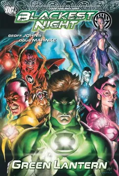
La historia comienza cuando los héroes y villanos fallecidos del Universo DC regresan a la vida como Black Lanterns, seres controlados por el poder de la muerte. Estos zombis conservan los recuerdos y habilidades que tenían en vida, pero su único objetivo es matar y alimentar el poder de sus anillos negros. Detrás de esta invasión se encuentra Nekron, la personificación de la muerte, quien busca extinguir toda la vida del universo. Para detenerlo, los Green Lantern Corps se unen a los demás cuerpos de linternas emocionales, como los Sinestro Corps (amarillo), Blue Lanterns (azul), Red Lanterns (rojo), Star Sapphires (violeta), Indigo Tribe (índigo) y Orange Lantern Corps (naranja). Durante la guerra, héroes y villanos deben dejar de lado sus diferencias para enfrentarse a un enemigo que utiliza a sus seres queridos fallecidos como armas. La batalla pone a prueba sus emociones, ya que cada color del espectro representa un sentimiento diferente, como la voluntad, el miedo, la esperanza, la ira, el amor, la compasión y la avaricia. Finalmente, los héroes consiguen derrotar a Nekron utilizando el poder combinado de todo el espectro emocional, restaurando la vida y evitando que el universo caiga en la oscuridad. La historia trata temas como la vida, la muerte, la esperanza y el poder de las emociones. Es considerada uno de los mejores eventos de DC Comics y el punto culminante de la etapa de Green Lantern escrita por Geoff Johns.